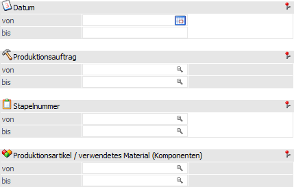
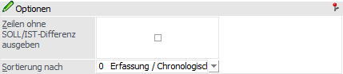

Mit Hilfe des Register "Artikel" kann eine Liste ausgegeben werden, auf welcher die Differenzen zwischen den SOLL- und den IST-Mengen der Produktionsaufträge ersichtlich sind.
Hinweis
Die SOLL-Mengen stammen aus der Anlage des Produktionsauftrags, d.h. wieviel wird standardmäßig benötigt um ein Artikel herzustellen. Hierbei ist eine Korrektur der SOLL-Mengen und der benötigten Komponenten über die Produktionskorrektur möglich.
Die IST-Mengen stammen wiederum aus der Produktionsendmeldung, d.h. wieviel wurde tatsächlich für die Herstellung des Artikels benötigt.

Die Ausgabe kann durch folgende Kriterien eingeschränkt bzw. beeinflusst werden:
Selektion

Ø Datum von / bis
An dieser Stelle kann eine Einschränkung auf Grundlage des Datums der Produktionsendmeldung erfolgen. D.h. es werden nur jene Produktionsaufträge (mit dessen Zeilen) berücksichtigt, welche in diesem Zeitraum endgemeldet wurden.
Ø Produktionsauftrag von / bis
Hier kann eine Selektion auf die auszuwertenden Produktionsaufträge vorgenommen werden.
Ø Stapelnummer von / bis
In diesen Feldern kann auf die auszuwertende Stapelnummern eingeschränkt werden.
Ø Produktionsartikel / verwendetes Material (Komponenten) von / bis
An dieser Stelle kann eine Einschränkung auf die auszuwertenden Artikel (Produktionsartikel, Halbfertigprodukte, Komponenten) erfolgen.
Hinweis
Wird im Feld "Produktionsartikel / verwendetes Material (Komponenten) von / bis" z.B. nur eine Artikelnummer eingegeben und dieser Artikel hat auch noch Ausprägungen, so werden alle Ausprägungen automatisch mit angedruckt. Nur wenn während des Anklickens des entsprechenden "Ausgabe"-Buttons die STRG-Taste gedrückt wird, wird nur der Hauptartikel alleine ausgewertet.
Optionen

Ø Zeilen ohne SOLL/IST-Differenz ausgeben
Durch Aktivierung dieser Optionen werden alle Zeilen ausgegeben und nicht nur jene mit einer SOLL/IST-Differenzen.
Hinweis
Wurde eine Komponenten während der Endmeldung hinzugefügt, so wird dieses nur ausgewiesen, wenn die Option aktiviert ist.
Ø Sortierung nach
An dieser Stelle kann die Sortierung der Liste definiert werden. Folgende Möglichkeiten stehen zur Verfügung:
ü 0 - Erfassung / Chronologisch
ü 1 - Auftrag
ü 2 - Stapelnummer